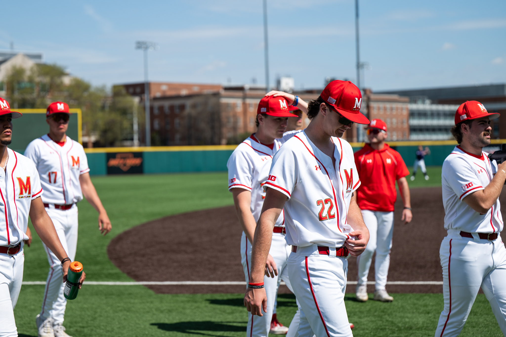

In 1974, Los Angeles Dodgers pitcher Tommy John was having one of the best years of his career. He had a 13-3 record and was a shoe-in to get picked for the All-Star team.
Tragedy ensued when John blew out the ulnar collateral ligament (UCL) in his left arm in a game against the Montreal Expos, sidelining him indefinitely for the rest of the 1974 season.
John consulted Dr. Frank Jobe who performed an experimental surgery that was later dubbed “Tommy John surgery,” as John was the first to receive the surgery.
After a long recovery, John returned and went on to pitch for 14 more seasons.
While Tommy John surgery has been a mainstay in baseball since Dr. Jobe pioneered it; the number of pitchers that have gotten the surgery jumped astronomically at the turn of the century.
The Need for Speed
Since 2016, more than a third of active MLB pitchers have gotten Tommy John surgery, according to Sara Berg, MS, of the American Medical Association.
Pitchers aren't required to go as long into games today as the once had to. In 2024, pitchers only managed to go the entire nine-inning stretch 26 times, the fewest in MLB history. Less innings means more concentrated effort during the limited amount of innings that pitchers receive.
The constant search for higher velocity in order to keep up in the league has proven to be one of the major reasons why the number of affected pitchers is on the rise.
In order to build their arms up, many pitchers use weighted baseballs. But, according to Maryland baseball athletic trainer Tyler Cronin, the use of these balls are doing more harm than good.
“As you incorporate some of those [weighted baseballs] into the throwing motion, you’re gaining a lot more external rotation through the shoulder, which puts a little more stress on the UCL as well,” said Cronin. “You’re stretching out all of that anatomy as you’re trying to gain a little bit more velocity.”
While velocity isn't the primary cause of UCL tears, it is a prominent factor to consider. Since 2016, fastball velocity has increased league-wide by roughly one mph, but the number of Tommy John surgeries grew exponentially.
Who is Affected?
While the surgery is commonly associated with MLB players, it is actually much more common among high school and college pitchers.
The combination of playing year-round in states that allow it like Florida or Arizona, the desire to want to emulate dominant MLB pitchers that they grew up watching and the feeling of needing to keep up with your peers are all some reasons why younger players have ended up pushing their arms to the brink in the modern era.
According to AMA research, almost 70 percent of Tommy John surgeries prior to 2014 were performed on athletes that were 16-20 years old.
Despite the number of surgeries being on the rise, the surgery has a success rate between 80 and 95 percent, according to the Cleveland Clinic.
Pitchers like Jacob deGrom, Tony Gonsolin and Kris Bubic who received the surgery in 2024, have already returned to their respective teams for the 2025 season.
On the Homefront
A photo of Maryland starting pitcher Kyle McCoy (No.22) walking towards the dugout before a game against Northwestern University, in College Park, March 30, 2025 (Ryan Bowie/The Diamondback)
Kyle McCoy, a left-handed pitcher for the Maryland baseball team, had the surgery in 2023 and returned to the mound in 2025. Since returning, McCoy has posted an impressive 3.27 ERA and solidified himself as the ace on the team.
“It was a long road to get him over the hump and get him back to feeling confidence in himself, confidence in the arm [and] in the weight room… you’re kind of bound to being concerned about how your arm is going to feel,” said Cronin, who rehabilitated McCoy.
The road to recovery usually takes anywhere from one year to 18 months, according to the Cleveland Clinic. However, once a player comes back from the surgery, they fight the mental battle of wondering if their arm will hold up.
“A lot of it is mental, it’s one of the longer rehabs in sports,” said Cronin. “Once guys can work past that and gain some of that confidence, they have a lot of success.”